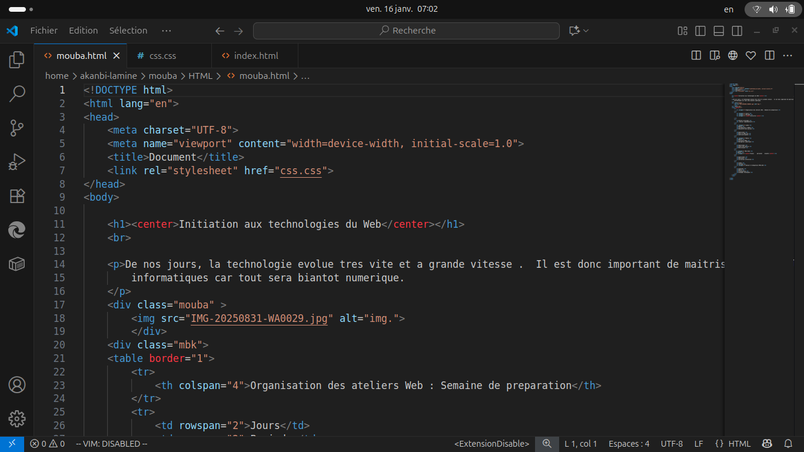

Le développeur finance
- Soumet l'URL de son site + un budget en sats.
- Le site est épinglé sur IPFS (Pinata), avec empreinte SHA-256.
- Paiement via Izichange (Mobile Money, crypto, BTC).
- La campagne est publiée — visible par tous les utilisateurs.
Lancez. Grandissez. Gagnez.
La plateforme de croissance Web3 qui connecte les porteurs de projets à une communauté de contributeurs rémunérés en Bitcoin (sats). Du trafic qualifié au temps passé, pas des clics— avec preuve d'intégrité IPFS + ancrage Bitcoin.
MVP v1.0 Chrome · Edge · Brave · Firefox (MV3) Sats · Izichange · IPFS
Les nouveaux projets peinent à trouver leurs premiers vrais utilisateurs. La publicité classique est coûteuse et peu ciblée, le « pay-per-click » ne garantit aucun engagement réel, et les micro-paiements Bitcoin restent difficiles à intégrer. Arise résout ces problèmes avec un écosystème simple à deux faces.
Le budget de la campagne est consommé au fur et à mesure des visites qualifiées— jamais distribué à l'avance. Chaque récompense n'est créditée qu'après vérification de l'intégrité IPFS du contenu.
Une infrastructure d'« attention economy » adossée à Bitcoin, pensée pour le marché UEMOA et au-delà.
Rémunération proportionnelle au temps activement passé sur un site—pas au clic. Chrono géré par l'extension en arrière-plan.
Les récompenses sont en satoshis (Bitcoin), stockées dans un wallet interne. Dépôt et financement via Izichange.
Chaque campagne est épinglée sur IPFS avec un manifeste immuable et un ancrage de paiement Bitcoin vérifiable.
Financez et déposez via Mobile Money, crypto (USDT, TRX, XRP) ou BTC. Conversion sats ↔ XOF intégrée.
Extension Manifest V3 pour Chrome, Edge, Brave et Firefox (109+). Authentification Firebase (email & Google).
Installer, découvrir, gagner. Le développeur soumet une URL et un budget—Arise gère l'IPFS et le paiement.
Arise ne se contente pas de faire visiter des sites : chaque campagne est vérifiable de bout en bout. C'est la propriété intellectuelle clé de la plateforme.
À la soumission, le contenu du site est épinglé sur IPFS via Pinata. L'affichage passe par une passerelle publique (ipfs.io) pour un rendu fiable.
Un hash cryptographique du contenu épinglé est enregistré. Il sert de référence d'intégrité pour chaque contribution future.
Un manifeste JSON immuable lie le contenu (CID + hash) au paiement (bitcoinAnchor Izichange/BTC), épinglé lui aussi sur IPFS.
Avant chaque crédit de sats, le serveur revérifie que le contenu IPFS correspond au hash enregistré. Sinon, la récompense est rejetée.
{
"arise": "1.0",
"type": "project_manifest",
"sourceUrl": "https://exemple.com",
"contentCid": "bafkrei…",
"contentSha256": "abc123…",
"payment": {
"amountSats": 5000,
"bitcoinAnchor": "izipay:btc:pi_xxx:proj_temp_xxx"
},
"rewards": { "rewardSats": 10, "minVisitDuration": 120 }
}L'extension est le cœur du produit : auth, découverte des projets, contribution, wallet et paiement s'y trouvent (le hub web est optionnel). Disponible pour Chrome, Edge, Brave et Firefox. Suivez ces 4 étapes ; chaque étape contient une image pour vous guider.

Téléchargez l'archive de l'extension depuis le lien de distribution. Le fichier est nommé arise-x.y.z.zip. Une fois téléchargé, dézippez-le sur votre ordinateur (clic droit → Extraire).
Vous obtiendrez un dossier contenant au minimum manifest.json, ainsi que les scripts (popup.js, background.js, content.js). Conservez ce dossier accessible (par exemple sur le Bureau) pour l'étape d'installation.

Choisissez le navigateur dans lequel installer Arise. Ces instructions couvrent les navigateurs Chromium (Chrome, Edge, Brave) et Firefox (109+), tous compatibles Manifest V3.
Important : pour un navigateur Chromium, activez le mode développeur pour l'installation locale. Pour Firefox, on utilise la page about:debugging pour charger temporairement l'extension.

Ces étapes installent l'extension en mode développeur. La publication sur le Chrome Web Store et Firefox Add-ons est prévue dans la feuille de route.

Ouvrez l'extension et connectez-vous (email ou Google, via Firebase). Parcourez les projets actifs, cliquez sur « Visiter le site » : un onglet s'ouvre et le chrono du temps actif démarre.
Après la durée minimum (ex. 120 s), validez votre contribution : le serveur vérifie l'intégrité IPFS puis crédite vos sats. Retrouvez votre solde, votre historique et le dépôt Izichange dans l'onglet Wallet. Le mode clair/sombre se règle dans Paramètres.
L'extension (Manifest V3) est autonome et regroupe toutes les fonctionnalités du MVP :
Un hub web complémentaire (dashboard développeur) est disponible sur pubbit.vercel.app, mais l'extension fonctionne seule.
Backend en production (Railway), hub sur Vercel, paiements Izichange et épinglage IPFS opérationnels.
Développeurs et créateurs : envoyez du trafic qualifié vers votre site. Choisissez un budget en sats, Arise s'occupe de l'épinglage IPFS et du paiement Izichange. Le budget est consommé uniquement sur les visites validées.
Montants indicatifs. Les paiements sont traités par Izichange (Mobile Money, crypto, BTC). En sandbox, les paiements BTC utilisent le testnet.
Rejoignez les développeurs et contributeurs qui construisent une économie de l'attention adossée à Bitcoin, un sat à la fois.